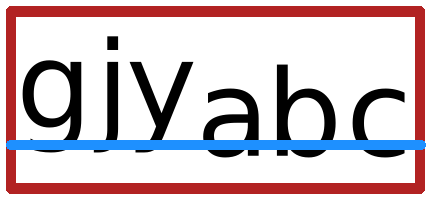

5 Bounding Box Adjusters
procedure
pict : pict-convertible? amt : real? (inset pict h-amt v-amt) → pict? pict : pict-convertible? h-amt : real? v-amt : real? (inset pict l-amt t-amt r-amt b-amt) → pict? pict : pict-convertible? l-amt : real? t-amt : real? r-amt : real? b-amt : real?
通过在相应的边上增加给定的数量来扩展 pict 的 bounding box ;上升和下降也被扩展。
Examples:
> (pict-width (disk 40)) 40
> (pict-width (inset (disk 40) -10)) 20
procedure
(clip-descent pict) → pict?
pict : pict-convertible?
截断 pict 的 bounding box ,去掉下降部分。
Examples:

procedure
(clip-ascent pict) → pict?
pict : pict-convertible?
通过去掉上升部分来截断 pict 的 bounding box 。
Examples:

procedure
(lift-bottom-relative-to-baseline p baseline [ #:extend-bb? bb?]) → pict? p : pict-convertible? baseline : real? bb? : any/c = #f
提升 p 中的图片,使图片的底部在其 baseline 之上。
如果 bb? 是 #f ,那么边框就不会改变,否则就会进行调整以适应生成的图片。
Examples:
> (define shift 10) > (explain (lift-bottom-relative-to-baseline t shift)) > (explain (lift-bottom-relative-to-baseline t shift #:extend-bb? #t)) > (explain (lift-bottom-relative-to-baseline tt shift)) > (explain (lift-bottom-relative-to-baseline tt shift #:extend-bb? #t)) > (explain (lift-bottom-relative-to-baseline t (- shift))) > (explain (lift-bottom-relative-to-baseline t (- shift) #:extend-bb? #t)) > (explain (lift-bottom-relative-to-baseline tt (- shift))) > (explain (lift-bottom-relative-to-baseline tt (- shift) #:extend-bb? #t))
Added in version 1.10 of package pict-lib.
procedure
(drop-top-relative-to-ascent p ascent [ #:extend-bb? bb?]) → pict? p : pict-convertible? ascent : real? bb? : any/c = #f
提升 p 中的图片,使图片的顶部在其上升线之下的 ascent 。
如果 bb? 是 #f ,那么边框就不会改变,否则就会调整以适应生成的图片。
Examples:
> (define shift 10) > (explain (drop-top-relative-to-ascent t shift)) > (explain (drop-top-relative-to-ascent t shift #:extend-bb? #t)) > (explain (drop-top-relative-to-ascent tt shift)) > (explain (drop-top-relative-to-ascent tt shift #:extend-bb? #t)) > (explain (drop-top-relative-to-ascent t (- shift))) > (explain (drop-top-relative-to-ascent t (- shift) #:extend-bb? #t)) > (explain (drop-top-relative-to-ascent tt (- shift))) > (explain (drop-top-relative-to-ascent tt (- shift) #:extend-bb? #t))
Added in version 1.10 of package pict-lib.
procedure
(lift-above-baseline pict amt) → pict?
pict : pict-convertible? amt : real?
为了向后兼容。
使用 lift-bottom-relative-to-baseline 来代替。
将 pict 相对于基线提升,如果有必要的话,扩展 bounding box 的高度。
Examples:
> (explain (hbl-append (text "ijijij" null 12) (text "abc" null 12))) > (inset (explain (lift-above-baseline (text "ijijij" null 12) 20)) 0 100 0 50)
> (explain (hbl-append (lift-above-baseline (text "ijijij" null 12) 20) (text "abc" null 12)))
procedure
(drop-below-ascent pict amt) → pict?
pict : pict-convertible? amt : real?
为了向后兼容。
使用 drop-top-relative-to-ascent 代替。
将 pict 相对于它的上升线下降,如果有必要的话,扩展 bounding box 的高度。
Examples:
> (define txt (text "ijgy" null 12)) > (explain (hbl-append txt (text "abc" null 12))) > (explain (drop-below-ascent txt 12))
> (explain (hbl-append (drop-below-ascent txt 12) (text "abc" null 12)))
procedure
pict : pict-convertible?
使得下降线为 0 ,上升线与高度相同。
Examples:
> (explain (hbl-append (text "gjy" null 12) (text "abc" null 12)))
> (explain (hbl-append (baseless (text "gjy" null 12)) (text "abc" null 12))) 
procedure
pict : pict-convertible? sub-pict : pict-convertible?
假设能在 pict 内找到 sub-pict ,
则将整体边界框移至 sub-pict 的边界框(但保留 pict 的所有绘图)。
pict-last 所报告的最后一个元素也被设置为(或 (or (pict-last sub-pict) sub-pict) 。
Examples:
> (define p1 (filled-rectangle 50 50 #:color "darkkhaki")) > (define p2 (filled-rectangle 30 30 #:color "sienna")) > (define combined (cc-superimpose p1 p2)) > combined
> (refocus combined p2)

procedure
pict : pict-convertible?
移动给定的 pict 的 bounding box ,以包围所有子 pict 的边界框(甚至是 launder 的 picts)。
Examples:
> (define p1 (filled-rectangle 50 50 #:color "maroon")) > (define p2 (disk 30 #:color "tomato")) > (define combined (cc-superimpose p1 p2)) > (refocus combined p2)
> (panorama (refocus combined p2))

procedure
pict : pict-convertible? sub-pict : pict-path?
返回一个像 pict 一样的 pict,
但是最后一个元素(由 pict-last 报告)被设置为 sub-pict 。
该 sub-pict 必须作为 pict 中的一个子图片(或子图片的路径)存在。
procedure
pict : pict-convertible? sub-pict : pict-convertible?
将 sub-pict 的最后一个元素传播给 pict 。
也就是说, use-last* 和 use-last 一样, 但是 sub-pict 的最后一个元素被用作 pict 的新的最后一个元素, 而不是 sub-pict 本身–除非 (pict-last sub-pict) 是 #f, 在这种情况下 sub-pict 被用作 pict 的最后一个元素。